|
| Фаска |
|
Создает фаску на выбранной кромке(ах) активной детали.
Команда AMCHAMFER используется для создания скошенных кромок на деталях. При выборе кромки, которая заканчивается в точке соединения
двух кромок и имеет непрерывную касательную, фаска автоматически продлевается, пока не достигнет места разрыва.
Несколько фасок создаются за раз, поскольку отдельный элемент контролируется одним определением фаски.
Кнопка инструментов
(Chamfer) |
 |
Меню |
Part -> Placed Features -> Chamfer |
Команда |
AMCHAMFER |
|
| Диалоговое окно Chamfer Feature |
|

OPERATION
Определяет метод создания фаски.
Equal Distance. Создает фаску с равными катетами на двух поверхностях, имеющих общую указанную кромку. Использует значение Distance1 в
зоне Parameters диалогового окна.
Pick the edge to chamfer:
Выберите кромку
Pick the edge to chamfer:
Выберите другую кромку илинажмитеENTER

Two Distances. Создает фаску со сторонами, указанными в полях
Distance1 и Distance2 в зоне Parameters диалогового окна.
Select edge to chamfer:
Выберите кромку
Press <ENTER> to continue:
Нажмите ENTER
Apply distance 1 to highlighted face.
Next/<Accept>:
Перебирайте n до выбора следующей поверхности или нажмите ENTER

Distance x Angle. Создает фаску по катету и углу, указанным в полях
Distance1 и Angle в зоне Parameters диалогового окна.
Select edge to chamfer:
Выберите кромку
Press <ENTER> to continue:
НажмитеENTER
Apply angle value to highlighted face.
Next/<Accept>:
Перебирайте n до выбора следующей поверхности или нажмите ENTER

PARAMETERS
Устанавливает значения, используемые при создании фаски.
Distance1. Устанавливает первый катет фаски.
Distance2. Устанавливает второй катет фаски.
Angle. Устанавливает угол фаски.
RETURN TO DIALOG
Определяет, возвращаться ли в диалоговое окно Chamfer Feature после
создания фаски.
|
| Упражнение: добавление фасок |
|
Шаг 1 |
Нарисуем эскиз или откроем файл с ранее созданной деталью. |
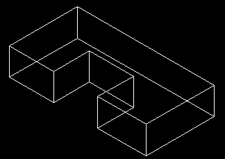
Шаг 2 |
Введем AMCHAMFER.
Установим значения в диалоговом окне Chamfer(Фаска)
Можно воспользоваться значениями по умолчанию. |
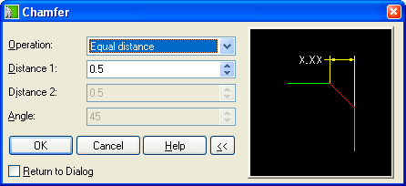
Шаг 3 |
Щелкнем мышью на той грани, на которой должна быть сформирована фаска. |
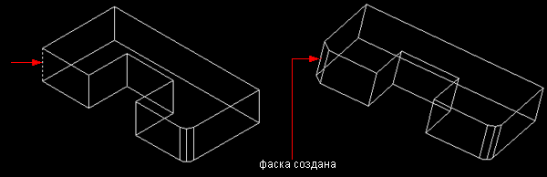
Дополнительные опции операции формирования скругления:
- Fixed With (С постоянной шириной);
- Cubic (Кубическое);
- Linear (Линейное).
Опция Fixed Width требует задать в качестве
параметра длину хорды, а не радиуса, поскольку этот тип скругления обладает
переменным характером радиуса скругления.
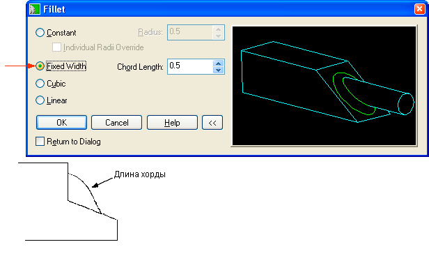
При использовании опции Cubic формируется
скругление с постепенно изменяющимся радиусом онлайнового типа. Значение
радиуса задают для обоих концов грани. В результате получается скругление
с плавным переходом от одного радиуса кривизны к другому.
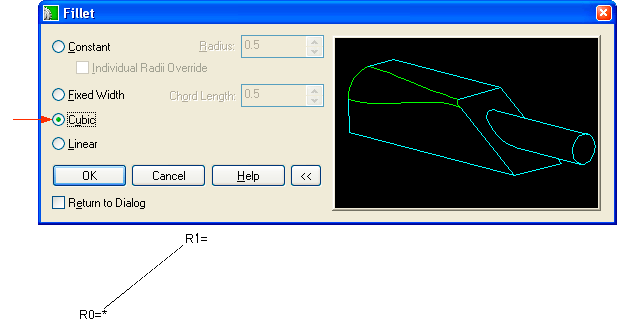
После выбора этой опции щелкните мышью на каждом радиусе и введите значение.
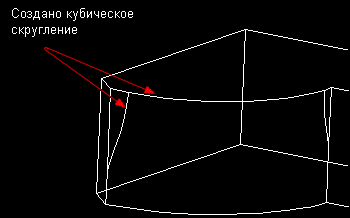
Использование опции Linear приводит к созданию
скругления с линейным переходом от одного радиуса к другому. Значение
радиуса вводится для обоих концов грани.
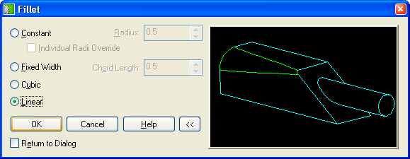
После выбора этой опции щелкните мышью на каждом радиусе и введите значение.
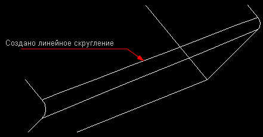
Дополнительные опции создания фаски включают в себя:
- Equal distance (Одинаковое расстояние);
- Two distance (Два расстояния);
- Distance and angle (Расстояние и угол).
При использовании опции Equal distance формируется фаска с равными сторонами.
Размер фаски вводится в окне Distance 1.
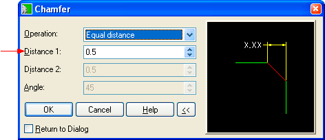
Если необходимо создать фаску с неравными сторонами, используют опцию Two distances.В этом случае значения должны
быть введены в окнах Distance 1 и Distance 2.
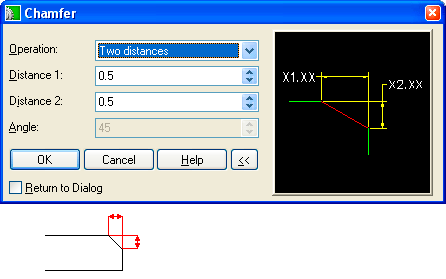
Если известны значения расстояния и желаемого угла, то можно использовать
опцию Distance and Angle.
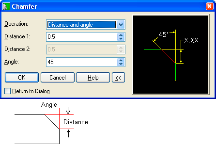
|